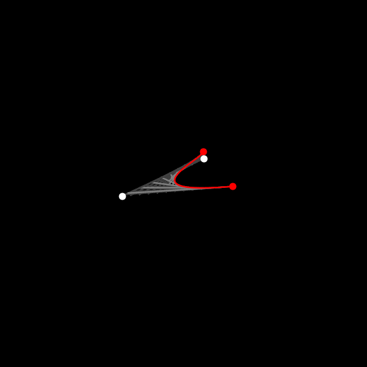
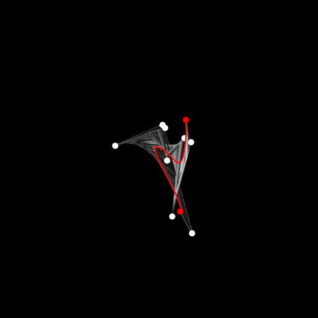

this problem was a massive failure. i just couldn't get the precision i needed for this. my value of
v was basically completely off and trying to integrate numerically wasn't good either.
i don't think i'm ever going to be able to do this one, it just requires too much precision that i can't figure out how to get.
but anyways, i got super distracted by bezier curves in general! they look so pretty and i got the urge to make some nice visualizations of them.
trying to learn matplotlib was a struggle, and my code is really unoptimized and slow, taking 10 seconds to generate a mere 250-frame gif, but i'm really happy
with how it turned out. it picks n random points and moves them around based on some random sine functions i chose for no real reason other than wanting the points to move
smoothly, and generates the bezier curve. it generates the bezier curve recursively, with lerp() functions. the reason i chose this was because
i wanted to show the lines like Q0Q1 (in the diagram to the right) as part of my animation, too.
i may have failed at the euler problem but i really like how the visualizations turned out, the colors are really pretty! i've used matplotlib before, but i've never made this anything
this involved. i really want to try and make more fun visualizations like this! maybe i'll work something out for 144.
four control points

ten control points

if you look closely at the right gif, you can even see the straight-line segments the curve
is built out of. this is because i didn't want to use too much computing power, generating that gif took quite a while
already. i hope you like looking at these gifs as much as i do !
import numpy as np
import matplotlib.pyplot as plt
from random import uniform
from math import sin, cos, sqrt, pi
from matplotlib.animation import FuncAnimation
from matplotlib.animation import PillowWriter
import matplotlib.colors
def lerp(x_0, y_0, x_1, y_1, t):
x_t = (1 - t) * x_0 + (t * x_1)
y_t = (1 - t) * y_0 + (t * y_1)
return x_t, y_t
def bezier(points, steps):
ps = list()
for step in range(steps):
t = step / steps
prev_p = points
for i in range(len(points) - 1):
new_p = np.empty(shape=(len(prev_p) - 1, 2))
for i in range(len(prev_p) - 1):
x0, y0, x1, y1 = prev_p[i][0], prev_p[i][1], prev_p[i + 1][0], prev_p[i + 1][1]
new_p[i][0], new_p[i][1] = lerp(x0, y0, x1, y1, t)
prev_p = new_p
if (step % (steps // 10) == 0) or len(prev_p) == 1:
yield prev_p
def r_p(nums):
return [(uniform(-3.14, 3.14), uniform(-3.14, 3.14)) for num in range(nums)]
writer = PillowWriter(fps=30)
plt.style.use('dark_background')
num_points = 8
points = r_p(num_points)
steps = 25
fig, ax = plt.subplots()
plt.axis('square')
coeffs = [uniform(0.7 , 1) for x in range(num_points)]
def f(frame):
f_points = list()
for c_i, point in enumerate(points):
f_x = coeffs[c_i] * sin(frame / 20 + point[0])
f_y = coeffs[c_i] * sin(frame / 20 + point[1])
f_points.append((f_x, f_y))
return f_points
def g(frame):
g_points = list()
g_helper = lambda x: sin(frame / 20 + x + pi) + sin(sqrt(2) * (frame / 20 + x)) + cos(sqrt(2) * (frame / 20 + x))
for c_i, point in enumerate(points):
g_x = coeffs[c_i] * g_helper(point[0])
g_y = coeffs[c_i] * g_helper(point[1])
g_points.append((g_x, g_y))
return g_points
# -- #
def animate(frame):
print(frame)
ax.clear()
functioned_points = g(frame)
new_points = bezier(functioned_points, steps)
bez_x = list()
bez_y = list()
for point in new_points:
if len(point) > 1:
for i in range(len(point) - 1):
x1, y1, x2, y2 = point[i][0], point[i][1], point[i + 1][0], point[i + 1][1]
ax.plot((x1, x2), (y1, y2), color=str(1 - len(point)/len(points)))
else:
bez_x.append(point[0][0])
bez_y.append(point[0][1])
animated_color = matplotlib.colors.hsv_to_rgb(((frame % 90) / 90, 1, 1))
for num, f_point in enumerate(functioned_points):
if num == 0 or num == len(functioned_points) - 1:
color = animated_color
else: color = 'white'
ax.plot(f_point[0], f_point[1], color=color , marker='o')
ax.plot(bez_x, bez_y, color=animated_color)
ax.set(xlim=(-3, 3), ylim=(-3, 3))
ax.axis('off')
ani = FuncAnimation(fig, animate, frames=250, interval=1, repeat=True)
plt.show()
ani.save('bezier.gif', writer=writer)
print('done')